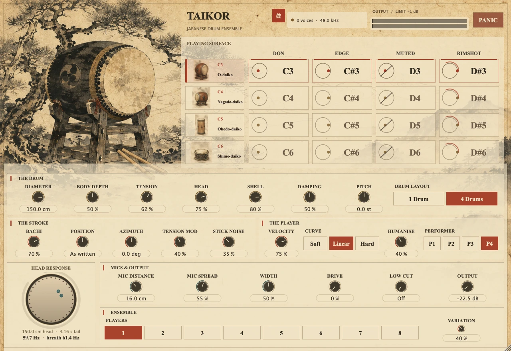

Sixteen notes, no keyswitches
The octave picks the drum and the bottom four semitones pick the stroke: Don, Ka, Tsu and Don Rim. Sixteen notes from C3 to D♯6, and every other key on the keyboard is silent.
A taiko instrument that solves every stroke from a struck circular membrane rather than replaying a recording: four drums, four strokes, sixteen notes, no keyswitches.

No keyswitches and no articulation menu. Sixteen notes, and every other key on the keyboard is silent.
The octave picks the drum and the bottom four semitones pick the stroke: Don, Ka, Tsu and Don Rim. Sixteen notes from C3 to D♯6, and every other key on the keyboard is silent.
Ō-daiko, chū-daiko, okedo-daiko and shime-daiko each have their own diameter, body depth, hide and shell, from a 150 cm carved ō-daiko sounding at 59.7 Hz to a 30 cm shime at 478.0 Hz. The Drum Layout switch changes what a keyboard row is: one design retuned across the rows, or the four independently sized family members.
MIDI velocity sets the impact speed of the bachi, from 0.12 m/s to 6 m/s, so a harder stroke comes out shorter, brighter and louder at once instead of only louder. At full Velocity Depth that is 33.6 dB between a ghost stroke and a full blow on an open Don on the ō-daiko, and 39.1 dB on the shime.
MIDI CC1 lays a palm-sized damping patch on the head and goes on damping while it is held, so a stroke played with the hand down is a muted stroke. The pitch wheel presses the head and bends a stroke that is already ringing, and CC16 and CC17 place each hit around and across the head sample-accurately.
The latest successful Nightly run carries one artifact with every instrument, for macOS, Linux and Windows. Artifacts are kept for 14 days and a GitHub account is needed to download them.
Open the Nightly runsOne README covering how the instrument works block by block, what it does not model, and its release history.
Open the READMETwenty-seven committed takes, rendered by continuous integration from this instrument’s own shipping engine, so they cannot drift from the code.
Open the audio demosC++20 and JUCE 8. The original code is under the MIT license; JUCE is used under its own terms.
Open the sourceTaikor does not model the room, the player’s body, the stand, or the far head’s radiation into the space behind the drum. It gives the enclosed air stiffness but neither mass, its own resonances nor any loss, and it never rings the bachi itself, which acts only as a force.
Taikor loads no samples, replays no recording, and emulates no particular branded instrument. The demonstration audio is generated by the project’s own code.
Include the instrument and its version, your host application, your operating system and clear reproduction steps.
protocodus@proton.meDirect support from Protocodus.